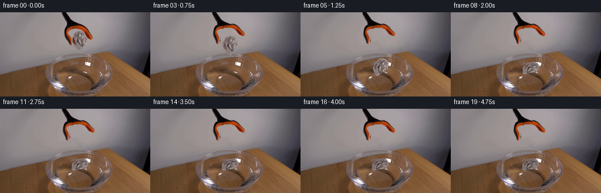
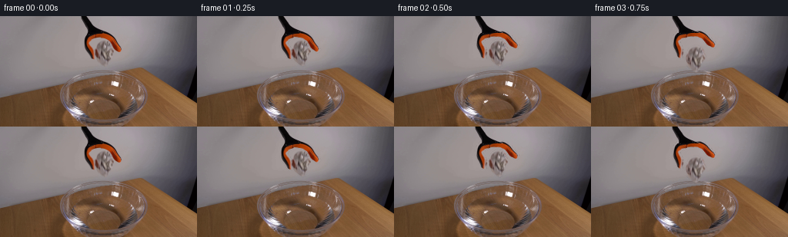
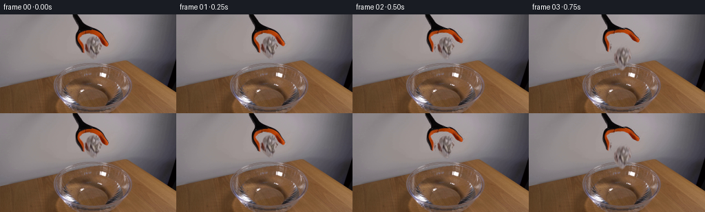

CODING AGENTS AS PIXEL WORLD MODELS
traex/GPT-6.1-Sol · 0133
点击播放 · 原生 RGB 像素
逐轮保存的候选
回放视频、检查图与代码变化。
每份候选均可单独播放。实际图片检查记录在下方工具轨迹中。
候选 01播放与检查图
点击播放 · 原生 RGB 像素


展开代码变化
--- 上一保存版本
+++ 本次保存版本
@@ -0,0 +1,195 @@
+from pathlib import Path
+import math
+import numpy as np
+import cv2
+from PIL import Image, ImageDraw
+from scipy.ndimage import gaussian_filter
+import artifact_io
+
+ROOT = Path(__file__).resolve().parent
+W,H = 256,144
+S = 4
+
+def polygon(points):
+ im=Image.new('L',(W*S,H*S),0)
+ ImageDraw.Draw(im).polygon([(round(x*S),round(y*S)) for x,y in points],fill=255)
+ return np.asarray(im.resize((W,H),Image.Resampling.LANCZOS),dtype=np.float32)/255
+
+def strip(bounds):
+ # Subpixel outline of each finger, including the soft photographic edge.
+ left=[(a-.45,y-.45) for y,a,b in bounds]
+ right=[(b+.45,y+.45) for y,a,b in bounds[::-1]]
+ return polygon(left+right)
+
+def transform(color,alpha,angle=0,dx=0,dy=0,sx=1,sy=1,pivot=(125,23)):
+ th=math.radians(angle)
+ R=np.array([[math.cos(th)*sx,-math.sin(th)*sx],[math.sin(th)*sy,math.cos(th)*sy]],np.float32)
+ p=np.array(pivot,dtype=np.float32)
+ M=np.concatenate((R,(p+np.array([dx,dy])-R@p)[:,None]),axis=1)
+ # Premultiplied alpha resampling avoids halos at the moving silhouette.
+ aa=cv2.warpAffine(alpha,M,(W,H),flags=cv2.INTER_CUBIC,borderMode=cv2.BORDER_CONSTANT)
+ rgba=cv2.warpAffine(color*alpha[:,:,None],M,(W,H),flags=cv2.INTER_CUBIC,borderMode=cv2.BORDER_CONSTANT)
+ return rgba,np.clip(aa,0,1)
+
+def over(dst,premul,a):
+ return dst*(1-a[:,:,None])+premul
+
+
+def generate():
+ original=np.asarray(Image.open(ROOT/'first_frame.png').convert('RGB'))
+ src=original.astype(np.float32)
+ lb=[(22,113,125),(23,112.5,125),(24,112,125),(25,111.5,125),(26,111,125),(27,110,125),
+ (28,109.8,124),(29,109.5,122),(30,109,120),(31,109,119),(32,109,118),(33,109,118),
+ (34,109,117),(35,109,117),(36,109,117),(37,109,118),(38,109,119),(39,110,120),
+ (40,110,120),(41,110,121),(42,110,122),(43,111,123),(44,111,123),(45,112,123),
+ (46,113,123),(47,114,124),(48,115,124),(49,115,124),(50,116,124),(51,117,124),
+ (52,117,124),(53,118,124),(54,118,124),(55,119,124),(56,120.5,123.5)]
+ rb=[(22,125,142.5),(23,125,144),(24,125,146),(25,125,147),(26,125,148),(27,125,149),
+ (28,131,150),(29,137,151),(30,139,151),(31,140,152),(32,141,152),(33,143,153),
+ (34,144,153),(35,144,154),(36,145,154),(37,145,155),(38,146,156),(39,146,157),
+ (40,147,157),(41,147,158),(42,148,158),(43,149,158),(44,150,159),(45,152,158),
+ (46,153,157),(47,154,155.5)]
+ left=strip(lb);right=strip(rb)
+ paper=polygon([(132,31),(136,30.8),(140,31.5),(142,33),(144,34.8),(145,37),
+ (145.5,39),(147,40.8),(147,42.5),(148.4,44.8),(147.8,46.8),
+ (146,48),(144.8,50.3),(144.4,51.5),(142.4,53.3),(143.1,55.1),
+ (143,56.8),(141.5,58.6),(141.4,60.5),(140.5,62.2),(139.7,63.7),
+ (137.8,65),(134.4,64.2),(132,62.3),(129.9,60.8),(128,59.2),
+ (126.1,57),(124.7,55.5),(124.2,52.3),(123.5,50),(123.5,47),
+ (122.5,45),(123.1,43),(124.6,41),(125,38),(126,35.8),(127.8,33.5)])
+ shaft_bounds=[]
+ edges=[(105,112),(105,113),(105,114),(106,114),(106,115),(107,116),(107,116),(108,117),
+ (108,118),(109,118),(109,119),(110,120),(111,121),(111,122),(112,124),(112,126),
+ (113,128),(113,130),(114,133),(114,135),(114,138),(114,140),(113,142),(113,143),(112,145)]
+ for y,(a,b) in enumerate(edges):shaft_bounds.append((y,a-.5,b+.5))
+ shaft=strip(shaft_bounds)
+ shaft[0,:]=np.maximum(shaft[0,:],polygon([(104.5,0),(113,0),(113,1),(104.5,1)])[0,:])
+ # All removed elements sit against the plain wall; interpolate that wall only.
+ remove=np.maximum.reduce([left,right,paper,shaft])
+ mask=(remove>.025).astype(np.uint8)*255
+ mask=cv2.dilate(mask,np.ones((3,3),np.uint8))
+ bg=cv2.inpaint(original,mask,5,cv2.INPAINT_TELEA).astype(np.float32)
+ # Inpaint is constrained to the original object region. Stationary shaft is restored
+ # exactly rather than synthesized.
+ stationary=bg.copy()
+ staticmask=shaft.copy()
+ staticmask[24:]=0
+ stationary=over(stationary,src*staticmask[:,:,None],staticmask)
+
+ papcol=src.copy()
+ # The far finger occludes a tiny strip of the paper; reconstruct that narrow
+ # fold from adjacent paper rather than carry orange rubber into the falling ball.
+ yy,xx=np.indices((H,W))
+ occlusion=(xx>=123)&(xx<=127)&(yy>=43)&(yy<=55)&(src[:,:,0]-src[:,:,1]>27)
+ replacement=papcol.copy()
+ for y in range(43,56):
+ for x in range(123,128):
+ if occlusion[y,x]:
+ replacement[y,x]=.7*src[y,min(x+5,132)]+.3*np.array([110,96,94])
+ papcol[occlusion]=replacement[occlusion]
+
+ # Surface is the original glass/water image, perturbed by damped radial waves.
+ water=np.exp(-np.maximum(((xx-136)/50.)**2+((yy-104)/27.)**2-.76,0)*16)
+ water*=(((xx-136)/53.)**2+((yy-104)/29.)**2<1)
+ water*=((yy>=78)&(yy<=134))
+ cx,cy=134.,104.5
+ rho=np.sqrt((xx-cx)**2+((yy-cy)/.47)**2+1e-5)
+ rx=(xx-cx)/(rho+1e-4)
+ ry=(yy-cy)/(.47*rho+1e-4)
+
+ def waves(frame,t):
+ age=t-1.15
+ if age<=0:return frame
+ radial=np.zeros((H,W),np.float32)
+ light=np.zeros((H,W),np.float32)
+ for delay,amp in [(0,1.0),(.20,.66),(.42,.40)]:
+ u=age-delay
+ if u<0:continue
+ radius=10.5+21*u
+ decay=amp*math.exp(-1.05*u)*min(1,u/.06)
+ d=rho-radius
+ wave=np.exp(-.5*(d/1.05)**2)
+ radial+=decay*wave*.65
+ # A highlight and a neighbouring trough, not graphic drawn rings.
+ light+=decay*(np.exp(-.5*((d+.8)/.6)**2)-.8*np.exp(-.5*((d-.55)/.8)**2))*6.5
+ radial*=water
+ mx=(xx+radial*rx).astype(np.float32)
+ my=(yy+radial*ry*.48).astype(np.float32)
+ disturbed=cv2.remap(frame,mx,my,cv2.INTER_LINEAR,borderMode=cv2.BORDER_REFLECT)
+ m=np.clip(water*.87,0,1)[:,:,None]
+ frame=frame*(1-m)+disturbed*m
+ directional=.55+.45*np.clip(-rx*.4-ry*.6,0,1)
+ frame+=light[:,:,None]*water[:,:,None]*directional[:,:,None]*np.array([1.,.96,.91])
+ # Tiny surface displacement around the landing paper, quickly disappearing.
+ if age<.36:
+ crest=np.exp(-((rho-11.8)/.70)**2)*math.sin(math.pi*age/.36)*water
+ frame+=crest[:,:,None]*np.array([8.,8.,7.])
+ return frame
+
+ def pose(t):
+ release=.45
+ if t<=release:return 135.3,48.0,0,1,1
+ if t<1.15:
+ d=t-release
+ return 135.3+.8*d,48+90*d*d,17*(d/.70)**1.4,1,1
+ u=t-1.15
+ q=1-math.exp(-u*3.8)
+ x=135.86-1.8*(1-math.exp(-u*.65))
+ y=92.1+4.0*q+1.0*math.sin(u*8)*math.exp(-u*2.4)
+ angle=17+40*q+2.5*math.sin(u*5)*math.exp(-u*1.8)
+ return x,y,angle,1-.045*q,1-.24*q
+
+ frames=[original]
+ for i in range(1,20):
+ t=i/4.
+ opening=12*max(0,min(1,(t-.16)/.46))
+ opening=opening*opening/12*(3-2*opening/12) if opening else 0
+ frame=waves(stationary.copy(),t)
+ x,y,ang,sx,sy=pose(t)
+ age=max(0,t-1.15)
+ # A faint contact shadow/reflection is only present once the ball touches water.
+ if age>0:
+ strength=(1-math.exp(-age*8))
+ shadow=np.exp(-(((xx-x)/12.5)**2+((yy-104.7)/3.7)**2)*1.4)*strength*water
+ frame-=shadow[:,:,None]*np.array([8,7,5])
+ pm,pa=transform(papcol,paper,ang,x-135.3,y-48,sx,-sy*.24,(135.3,48))
+ # Reflection is placed beneath the contact line and blurred heavily.
+ M=np.float32([[1,0,0],[0,1,104.7-y]])
+ pm=cv2.warpAffine(pm,M,(W,H));pa=cv2.warpAffine(pa,M,(W,H))
+ pa=gaussian_filter(pa,1.5)*.12*strength*water
+ reflected=gaussian_filter(pm,(1.2,1.2,0))
+ denom=gaussian_filter(cv2.warpAffine(transform(papcol,paper,ang,x-135.3,y-48,sx,-sy*.24,(135.3,48))[1],M,(W,H)),1.2)
+ col=reflected/np.maximum(denom[:,:,None],.015)
+ frame=frame*(1-pa[:,:,None])+col*pa[:,:,None]
+
+ # Preserve the source's real folds. Wetting is slow and local to the lower folds.
+ wet=min(.105,age*.028)
+ paper_color=src*(1-min(1,max(0,(t-.45)/.35)))+papcol*min(1,max(0,(t-.45)/.35))
+ paper_color=paper_color*(1-wet)
+ if .45<t<1.15:
+ # Real-time short exposure motion blur, unrelated to the sampling framerate.
+ pp=np.zeros_like(frame); aa=np.zeros((H,W),np.float32)
+ for dt in [-1/90,0,1/90]:
+ px,py,theta,ssx,ssy=pose(t+dt)
+ p,a=transform(paper_color,paper,theta,px-135.3,py-48,ssx,ssy,(135.3,48))
+ pp+=p/3;aa+=a/3
+ frame=over(frame,pp,aa)
+ else:
+ p,a=transform(paper_color,paper,ang,x-135.3,y-48,sx,sy,(135.3,48))
+ frame=over(frame,p,a)
+ # The two mechanical fingers open about the shared hinge; the shaft does not move.
+ p,a=transform(src,left,opening,pivot=(125,23));frame=over(frame,p,a)
+ p,a=transform(src,right,-opening*.92,pivot=(125,23));frame=over(frame,p,a)
+ # Original shaft/hinge occludes the moving jaws at their attachment.
+ hinge=staticmask.copy();hinge[22:]=0
+ frame=over(frame,src*hinge[:,:,None],hinge)
+ frames.append(np.clip(np.rint(frame),0,255).astype(np.uint8))
+ frames=np.stack(frames)
+ artifact_io.save(frames,ROOT)
+ np.save(ROOT/'.tmp'/'rgb_video.npy',frames)
+ Image.fromarray(np.uint8(np.clip(bg,0,255))).save(ROOT/'.tmp'/'clean_plate.png')
+ Image.fromarray(np.uint8(np.stack([paper,left,right],2)*255)).save(ROOT/'.tmp'/'component_masks.png')
+ return frames
+
+if __name__=='__main__':
+ generate()
候选 02播放与检查图
点击播放 · 原生 RGB 像素

展开代码变化
--- 上一保存版本
+++ 本次保存版本
@@ -9,6 +9,8 @@
ROOT = Path(__file__).resolve().parent
W,H = 256,144
S = 4
+RELEASE = .45
+IMPACT = .95
def polygon(points):
im=Image.new('L',(W*S,H*S),0)
@@ -98,7 +100,7 @@
ry=(yy-cy)/(.47*rho+1e-4)
def waves(frame,t):
- age=t-1.15
+ age=t-IMPACT
if age<=0:return frame
radial=np.zeros((H,W),np.float32)
light=np.zeros((H,W),np.float32)
@@ -127,12 +129,12 @@
return frame
def pose(t):
- release=.45
+ release=RELEASE
if t<=release:return 135.3,48.0,0,1,1
- if t<1.15:
+ if t<IMPACT:
d=t-release
- return 135.3+.8*d,48+90*d*d,17*(d/.70)**1.4,1,1
- u=t-1.15
+ return 135.3+1.12*d,48+44.1*(d/(IMPACT-RELEASE))**2,17*(d/(IMPACT-RELEASE))**1.4,1,1
+ u=t-IMPACT
q=1-math.exp(-u*3.8)
x=135.86-1.8*(1-math.exp(-u*.65))
y=92.1+4.0*q+1.0*math.sin(u*8)*math.exp(-u*2.4)
@@ -146,7 +148,7 @@
opening=opening*opening/12*(3-2*opening/12) if opening else 0
frame=waves(stationary.copy(),t)
x,y,ang,sx,sy=pose(t)
- age=max(0,t-1.15)
+ age=max(0,t-IMPACT)
# A faint contact shadow/reflection is only present once the ball touches water.
if age>0:
strength=(1-math.exp(-age*8))
@@ -166,7 +168,7 @@
wet=min(.105,age*.028)
paper_color=src*(1-min(1,max(0,(t-.45)/.35)))+papcol*min(1,max(0,(t-.45)/.35))
paper_color=paper_color*(1-wet)
- if .45<t<1.15:
+ if RELEASE<t<IMPACT:
# Real-time short exposure motion blur, unrelated to the sampling framerate.
pp=np.zeros_like(frame); aa=np.zeros((H,W),np.float32)
for dt in [-1/90,0,1/90]:
可观测工具轨迹
实际执行的命令与返回图片。
命令 1exit 0
/bin/bash -lc 'ls -la && cat prompt.txt && cat GENERATION_RULES.md'
命令 2exit 0
/bin/bash -lc "cat artifact_io.py && python - <<'PY'
from PIL import Image
import numpy as np
im=np.array(Image.open('first_frame.png')); print(im.shape)
a=np.array(Image.open('first_frame.png').resize((96,54)))
chars=' .:-=+*#%@'
for row in a:
print(''.join(chars[min(9,int(np.mean(p)/256*10))] for p in row))
PY"命令 3exit 0
/bin/bash -lc "python - <<'PY'
import numpy as np
from PIL import Image
im=np.array(Image.open('first_frame.png'))
for y in range(0,144,4):
s=''
for x in range(0,256,2):
r,g,b=map(int,im[y,x]);v=(r+g+b)/3
if r>g*1.4 and r-b>35: c='O' if r>140 else 'o'
elif min(r,g,b)>210: c='W'
elif min(r,g,b)>165 and max(r,g,b)-min(r,g,b)<40: c='w'
elif max(r,g,b)<60: c='X'
elif max(r,g,b)<100:c='x'
elif max(r,g,b)-min(r,g,b)<25:c='.'
elif b>r+15:c='b'
elif r>g*1.15:c='t'
else:c='-'
s+=c
print(f'{y:3}',s)
print('SAMPLE')
for y in [0,10,20,30,40,50,60,70,80,90,100,110,120,130,140]:
print(y,[(x,im[y,x].tolist()) for x in [80,95,100,105,110,115,120,125,130,135,140,145,150,155,160,165,170,180,200]])
PY"命令 4exit 0
/bin/bash -lc "python - <<'PY'
from PIL import Image
import numpy as np
im=np.array(Image.open('first_frame.png'))
cs=' .,:;irsXA253hMHGS#9B&@'
for y in range(18,67):
print(f'{y:02} '+''.join(cs[min(len(cs)-1, int(im[y,x].mean()/256*len(cs)))] for x in range(106,164)))
print('R G B crop color classifications')
for y in range(26,65):
s=''
for x in range(110,156):
r,g,b=map(int,im[y,x]);
if r>g*1.4 and r-b>35: c='O' if r>140 else 'o'
elif max(r,g,b)<60: c='#'
elif max(r,g,b)<100:c='x'
elif r-g>12 and b<g+1:c='p'
elif r-g>10:c='P'
else:c='.'
s+=c
print(f'{y:02} {s}')
print('paper RGB crop:')
for y in range(32,64,2):
print(y,' '.join(f'{x}:{im[y,x,0]}/{im[y,x,1]}/{im[y,x,2]}' for x in range(122,149,2)))
PY"命令 5exit 0
/bin/bash -lc "python - <<'PY'
from PIL import Image
import numpy as np
im=np.array(Image.open('first_frame.png'))
cs=' .:-=+*#%@'
for y in range(70,144,2):
print(f'{y:03} '+''.join(cs[min(9,int(im[y,x].mean()/256*10))] for x in range(65,190)))
print('row edge brightness and saturation')
for y in range(75,144,3):
print(y,[(x,im[y,x].tolist()) for x in range(75,186,10)])
PY"命令 6exit 0
/bin/bash -lc "python - <<'PY'
from PIL import Image
import numpy as np
im=np.array(Image.open('first_frame.png')).astype(float)
for y in range(65,144):
s=''
for x in range(65,195):
r,g,b=im[y,x];
c=' '
if r-g<22 and g-b<14: c='.'
if r-g<22 and g-b<14 and r<100:c='x'
if r-g<22 and g-b<14 and r<65:c='#'
if r-g<22 and g-b<14 and r>180:c='W'
if r-g<22 and g-b<14 and r>230:c='@'
if b>g+5:c='b'
s+=c
print(f'{y:03} {s}')
PY"命令 7exit 0
/bin/bash -lc "python - <<'PY' import importlib.util for p in ['cv2','scipy','numpy','PIL']: print(p, bool(importlib.util.find_spec(p))) PY find . -maxdepth 2 -type f -not -name 'first_frame.png' -not -name 'prompt.txt' -not -name 'GENERATION_RULES.md' -not -name 'artifact_io.py' -not -name 'player_template.html'"
命令 8exit 0
/bin/bash -lc "python - <<'PY'
import numpy as np
from PIL import Image
im=np.array(Image.open('first_frame.png')).astype(float)
for y in range(20,68):
xx=np.r_[np.arange(97,107),np.arange(163,176)]
B=np.stack([np.polyval(np.polyfit(xx,im[y,xx,c],2), np.arange(256)) for c in range(3)],axis=1)
s=''
for x in range(106,162):
r,g,b=im[y,x]; dist=np.linalg.norm(im[y,x]-B[x]);
if dist<8:c=' '
elif r-g>35 and r-b>45:c='O' if r>130 else 'o'
elif r<60:c='#'
elif dist<20:c='.'
elif dist<40:c='p'
elif dist<70:c='P'
else:c='D'
s+=c
print(f'{y:02} {s}')
PY"命令 9exit 0
/bin/bash -lc "python - <<'PY'
from PIL import Image
import numpy as np
im=np.array(Image.open('first_frame.png')).astype(int)
for y in range(22,58):
m=(im[y,:,0]-im[y,:,1]>35)|(im[y,:,0]<65)
xs=np.flatnonzero(m&(np.arange(256)>106)&(np.arange(256)<165))
splits=np.split(xs,np.flatnonzero(np.diff(xs)>1)+1)
print(y, [(s[0],s[-1]) for s in splits if len(s)>0])
PY"命令 10exit 0
/bin/bash -lc "python - <<'PY'
from PIL import Image
import numpy as np
im=np.array(Image.open('first_frame.png')).astype(float)
for y in range(0,28):
xx=np.r_[np.arange(92,100),np.arange(163,176)]
bg=np.stack([np.polyval(np.polyfit(xx,im[y,xx,c],2),np.arange(256)) for c in range(3)],1)
xs=np.where((np.linalg.norm(im[y]-bg,axis=1)>30)&(np.arange(256)>99)&(np.arange(256)<160))[0]
print(y, xs.min(),xs.max())
PY"命令 11exit 0
/bin/bash -lc "cat > generate.py <<'PY'
from pathlib import Path
import math
import numpy as np
import cv2
from PIL import Image, ImageDraw
from scipy.ndimage import gaussian_filter
import artifact_io
ROOT = Path(__file__).resolve().parent
W,H = 256,144
S = 4
def polygon(points):
im=Image.new('L',(W*S,H*S),0)
ImageDraw.Draw(im).polygon([(round(x*S),round(y*S)) for x,y in points],fill=255)
return np.asarray(im.resize((W,H),Image.Resampling.LANCZOS),dtype=np.float32)/255
def strip(bounds):
# Subpixel outline of each finger, including the soft photographic edge.
left=[(a-.45,y-.45) for y,a,b in bounds]
right=[(b+.45,y+.45) for y,a,b in bounds[::-1]]
return polygon(left+right)
def transform(color,alpha,angle=0,dx=0,dy=0,sx=1,sy=1,pivot=(125,23)):
th=math.radians(angle)
R=np.array([[math.cos(th)*sx,-math.sin(th)*sx],[math.sin(th)*sy,math.cos(th)*sy]],np.float32)
p=np.array(pivot,dtype=np.float32)
M=np.concatenate((R,(p+np.array([dx,dy])-R@p)[:,None]),axis=1)
# Premultiplied alpha resampling avoids halos at the moving silhouette.
aa=cv2.warpAffine(alpha,M,(W,H),flags=cv2.INTER_CUBIC,borderMode=cv2.BORDER_CONSTANT)
rgba=cv2.warpAffine(color*alpha[:,:,None],M,(W,H),flags=cv2.INTER_CUBIC,borderMode=cv2.BORDER_CONSTANT)
return rgba,np.clip(aa,0,1)
def over(dst,premul,a):
return dst*(1-a[:,:,None])+premul
def generate():
original=np.asarray(Image.open(ROOT/'first_frame.png').convert('RGB'))
src=original.astype(np.float32)
lb=[(22,113,125),(23,112.5,125),(24,112,125),(25,111.5,125),(26,111,125),(27,110,125),
(28,109.8,124),(29,109.5,122),(30,109,120),(31,109,119),(32,109,118),(33,109,118),
(34,109,117),(35,109,117),(36,109,117),(37,109,118),(38,109,119),(39,110,120),
(40,110,120),(41,110,121),(42,110,122),(43,111,123),(44,111,123),(45,112,123),
(46,113,123),(47,114,124),(48,115,124),(49,115,124),(50,116,124),(51,117,124),
(52,117,124),(53,118,124),(54,118,124),(55,119,124),(56,120.5,123.5)]
rb=[(22,125,142.5),(23,125,144),(24,125,146),(25,125,147),(26,125,148),(27,125,149),
(28,131,150),(29,137,151),(30,139,151),(31,140,152),(32,141,152),(33,143,153),
(34,144,153),(35,144,154),(36,145,154),(37,145,155),(38,146,156),(39,146,157),
(40,147,157),(41,147,158),(42,148,158),(43,149,158),(44,150,159),(45,152,158),
(46,153,157),(47,154,155.5)]
left=strip(lb);right=strip(rb)
paper=polygon([(132,31),(136,30.8),(140,31.5),(142,33),(144,34.8),(145,37),
(145.5,39),(147,40.8),(147,42.5),(148.4,44.8),(147.8,46.8),
(146,48),(144.8,50.3),(144.4,51.5),(142.4,53.3),(143.1,55.1),
(143,56.8),(141.5,58.6),(141.4,60.5),(140.5,62.2),(139.7,63.7),
(137.8,65),(134.4,64.2),(132,62.3),(129.9,60.8),(128,59.2),
(126.1,57),(124.7,55.5),(124.2,52.3),(123.5,50),(123.5,47),
(122.5,45),(123.1,43),(124.6,41),(125,38),(126,35.8),(127.8,33.5)])
shaft_bounds=[]
edges=[(105,112),(105,113),(105,114),(106,114),(106,115),(107,116),(107,116),(108,117),
(108,118),(109,118),(109,119),(110,120),(111,121),(111,122),(112,124),(112,126),
(113,128),(113,130),(114,133),(114,135),(114,138),(114,140),(113,142),(113,143),(112,145)]
for y,(a,b) in enumerate(edges):shaft_bounds.append((y,a-.5,b+.5))
shaft=strip(shaft_bounds)
shaft[0,:]=np.maximum(shaft[0,:],polygon([(104.5,0),(113,0),(113,1),(104.5,1)])[0,:])
# All removed elements sit against the plain wall; interpolate that wall only.
remove=np.maximum.reduce([left,right,paper,shaft])
mask=(remove>.025).astype(np.uint8)*255
mask=cv2.dilate(mask,np.ones((3,3),np.uint8))
bg=cv2.inpaint(original,mask,5,cv2.INPAINT_TELEA).astype(np.float32)
# Inpaint is constrained to the original object region. Stationary shaft is restored
# exactly rather than synthesized.
stationary=bg.copy()
staticmask=shaft.copy()
staticmask[24:]=0
stationary=over(stationary,src*staticmask[:,:,None],staticmask)
papcol=src.copy()
# The far finger occludes a tiny strip of the paper; reconstruct that narrow
# fold from adjacent paper rather than carry orange rubber into the falling ball.
yy,xx=np.indices((H,W))
occlusion=(xx>=123)&(xx<=127)&(yy>=43)&(yy<=55)&(src[:,:,0]-src[:,:,1]>27)
replacement=papcol.copy()
for y in range(43,56):
for x in range(123,128):
if occlusion[y,x]:
replacement[y,x]=.7*src[y,min(x+5,132)]+.3*np.array([110,96,94])
papcol[occlusion]=replacement[occlusion]
# Surface is the original glass/water image, perturbed by damped radial waves.
water=np.exp(-np.maximum(((xx-136)/50.)**2+((yy-104)/27.)**2-.76,0)*16)
water*=(((xx-136)/53.)**2+((yy-104)/29.)**2<1)
water*=((yy>=78)&(yy<=134))
cx,cy=134.,104.5
rho=np.sqrt((xx-cx)**2+((yy-cy)/.47)**2+1e-5)
rx=(xx-cx)/(rho+1e-4)
ry=(yy-cy)/(.47*rho+1e-4)
def waves(frame,t):
age=t-1.15
if age<=0:return frame
radial=np.zeros((H,W),np.float32)
light=np.zeros((H,W),np.float32)
for delay,amp in [(0,1.0),(.20,.66),(.42,.40)]:
u=age-delay
if u<0:continue
radius=10.5+21*u
decay=amp*math.exp(-1.05*u)*min(1,u/.06)
d=rho-radius
wave=np.exp(-.5*(d/1.05)**2)
radial+=decay*wave*.65
# A highlight and a neighbouring trough, not graphic drawn rings.
light+=decay*(np.exp(-.5*((d+.8)/.6)**2)-.8*np.exp(-.5*((d-.55)/.8)**2))*6.5
radial*=water
mx=(xx+radial*rx).astype(np.float32)
my=(yy+radial*ry*.48).astype(np.float32)
disturbed=cv2.remap(frame,mx,my,cv2.INTER_LINEAR,borderMode=cv2.BORDER_REFLECT)
m=np.clip(water*.87,0,1)[:,:,None]
frame=frame*(1-m)+disturbed*m
directional=.55+.45*np.clip(-rx*.4-ry*.6,0,1)
frame+=light[:,:,None]*water[:,:,None]*directional[:,:,None]*np.array([1.,.96,.91])
# Tiny surface displacement around the landing paper, quickly disappearing.
if age<.36:
crest=np.exp(-((rho-11.8)/.70)**2)*math.sin(math.pi*age/.36)*water
frame+=crest[:,:,None]*np.array([8.,8.,7.])
return frame
def pose(t):
release=.45
if t<=release:return 135.3,48.0,0,1,1
if t<1.15:
d=t-release
return 135.3+.8*d,48+90*d*d,17*(d/.70)**1.4,1,1
u=t-1.15
q=1-math.exp(-u*3.8)
x=135.86-1.8*(1-math.exp(-u*.65))
y=92.1+4.0*q+1.0*math.sin(u*8)*math.exp(-u*2.4)
angle=17+40*q+2.5*math.sin(u*5)*math.exp(-u*1.8)
return x,y,angle,1-.045*q,1-.24*q
frames=[original]
for i in range(1,20):
t=i/4.
opening=12*max(0,min(1,(t-.16)/.46))
opening=opening*opening/12*(3-2*opening/12) if opening else 0
frame=waves(stationary.copy(),t)
x,y,ang,sx,sy=pose(t)
age=max(0,t-1.15)
# A faint contact shadow/reflection is only present once the ball touches water.
if age>0:
strength=(1-math.exp(-age*8))
shadow=np.exp(-(((xx-x)/12.5)**2+((yy-104.7)/3.7)**2)*1.4)*strength*water
frame-=shadow[:,:,None]*np.array([8,7,5])
pm,pa=transform(papcol,paper,ang,x-135.3,y-48,sx,-sy*.24,(135.3,48))
# Reflection is placed beneath the contact line and blurred heavily.
M=np.float32([[1,0,0],[0,1,104.7-y]])
pm=cv2.warpAffine(pm,M,(W,H));pa=cv2.warpAffine(pa,M,(W,H))
pa=gaussian_filter(pa,1.5)*.12*strength*water
reflected=gaussian_filter(pm,(1.2,1.2,0))
denom=gaussian_filter(cv2.warpAffine(transform(papcol,paper,ang,x-135.3,y-48,sx,-sy*.24,(135.3,48))[1],M,(W,H)),1.2)
col=reflected/np.maximum(denom[:,:,None],.015)
frame=frame*(1-pa[:,:,None])+col*pa[:,:,None]
# Preserve the source's real folds. Wetting is slow and local to the lower folds.
wet=min(.105,age*.028)
paper_color=src*(1-min(1,max(0,(t-.45)/.35)))+papcol*min(1,max(0,(t-.45)/.35))
paper_color=paper_color*(1-wet)
if .45<t<1.15:
# Real-time short exposure motion blur, unrelated to the sampling framerate.
pp=np.zeros_like(frame); aa=np.zeros((H,W),np.float32)
for dt in [-1/90,0,1/90]:
px,py,theta,ssx,ssy=pose(t+dt)
p,a=transform(paper_color,paper,theta,px-135.3,py-48,ssx,ssy,(135.3,48))
pp+=p/3;aa+=a/3
frame=over(frame,pp,aa)
else:
p,a=transform(paper_color,paper,ang,x-135.3,y-48,sx,sy,(135.3,48))
frame=over(frame,p,a)
# The two mechanical fingers open about the shared hinge; the shaft does not move.
p,a=transform(src,left,opening,pivot=(125,23));frame=over(frame,p,a)
p,a=transform(src,right,-opening*.92,pivot=(125,23));frame=over(frame,p,a)
# Original shaft/hinge occludes the moving jaws at their attachment.
hinge=staticmask.copy();hinge[22:]=0
frame=over(frame,src*hinge[:,:,None],hinge)
frames.append(np.clip(np.rint(frame),0,255).astype(np.uint8))
frames=np.stack(frames)
artifact_io.save(frames,ROOT)
np.save(ROOT/'.tmp'/'rgb_video.npy',frames)
Image.fromarray(np.uint8(np.clip(bg,0,255))).save(ROOT/'.tmp'/'clean_plate.png')
Image.fromarray(np.uint8(np.stack([paper,left,right],2)*255)).save(ROOT/'.tmp'/'component_masks.png')
return frames
if __name__=='__main__':
generate()
PY
python generate.py"命令 12exit 0
/bin/bash -lc "python - <<'PY'
from PIL import Image
import numpy as np
f=np.load('.tmp/rgb_video.npy'); cs=' .,:;irsXA253hMHGS#9B&@'
for idx in [0,1,2,3,4,5,8,19]:
print('\\nFRAME',idx)
for y in range(16,123,2):
print(f'{y:03} '+''.join(cs[min(len(cs)-1,int(f[idx,y,x].mean()/256*len(cs)))] for x in range(96,170)))
print('mean difference',np.abs(f[idx].astype(float)-f[0]).mean())
PY"命令 13exit 0
/bin/bash -lc "python - <<'PY'
import generate
import numpy as np
from PIL import Image
im=np.array(Image.open('first_frame.png')).astype(int)
m=np.array(Image.open('.tmp/component_masks.png'))[:,:,0]/255
for y in range(29,65):
xs=np.where((m[y]>.2)&(im[y,:,0]-im[y,:,1]>35))[0]
if len(xs):print(y,[(int(x),im[y,x].tolist(),round(m[y,x],2)) for x in xs])
f=np.load('.tmp/rgb_video.npy')
for i in [5,8,19]:
xs=np.where((f[i,75:110,:,0].astype(float)-f[i,75:110,:,1]>35)&(f[i,75:110,:,1]<65))
print('orange/dark counts frame',i,len(xs[0]))
PY"命令 14exit 0
/bin/bash -lc "python - <<'PY'
import numpy as np
from PIL import Image
im=np.array(Image.open('first_frame.png')).astype(float);bg=np.array(Image.open('.tmp/clean_plate.png')).astype(float)
for y in range(20,67,2):
print(y,np.round(bg[y,110:159:4],0).astype(int).tolist())
PY"命令 15exit 0
/bin/bash -lc "python - <<'PY'
p='generate.py'
s=open(p).read().replace('S = 4','S = 4\\nRELEASE = .45\\nIMPACT = .95')
s=s.replace('age=t-1.15','age=t-IMPACT').replace('release=.45','release=RELEASE').replace('if t<1.15:','if t<IMPACT:').replace('return 135.3+.8*d,48+90*d*d,17*(d/.70)**1.4,1,1','return 135.3+1.12*d,48+44.1*(d/(IMPACT-RELEASE))**2,17*(d/(IMPACT-RELEASE))**1.4,1,1').replace('u=t-1.15','u=t-IMPACT').replace('age=max(0,t-1.15)','age=max(0,t-IMPACT)').replace('if .45<t<1.15:','if RELEASE<t<IMPACT:')
open(p,'w').write(s)
PY
python generate.py
python - <<'PY'
import numpy as np
from PIL import Image
from pathlib import Path
f=np.load('.tmp/rgb_video.npy')
first=np.array(Image.open('first_frame.png').convert('RGB'))
assert f.shape==(20,144,256,3) and f.dtype==np.uint8
assert np.array_equal(f[0],first)
with np.load('pixels.npz') as z:
p=z['pixels']; print('RGB frames:',f.shape,f.dtype,'packed shape:',p.shape)
print('First frame exact:',np.array_equal(f[0],first))
print('Outputs:',[str(p) for p in [Path('pixels.npz'),Path('index.html')]])
PY"保存候选 2 份；完成命令 15 次；可验证图片返回 0 张。原始 API 响应与完整日志保留在本地。